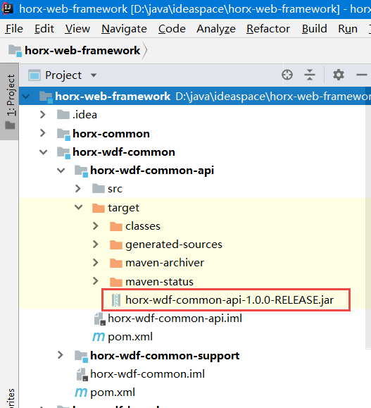

源码结构
├─horx-web-framework │ ├─horx-common 基础工具类 │ ├─horx-wdf-common │ │ └─horx-wdf-common-api 基础api，包含常用实体类、注解、枚举、异常类 │ │ └─horx-wdf-common-support 基础支持包，比如Mybatis分页拦截器、Spring全局异常处理类 │ ├─horx-wdf-sys │ │ └─horx-wdf-sys-api-base 系统管理api，包含DTO、枚举等 │ │ └─horx-wdf-sys-api 系统管理api，包含Service接口。与horx-wdf-sys-api-base分开，是为了兼容SpringCloud的API │ │ └─horx-wdf-sys-impl 系统管理实现，包含Service实现、Mybatis Mapper、Mybatis Mapper xml等 │ │ └─horx-wdf-sys-support 系统管理支持包，包含一些可扩展接口、默认实现、Spring拦截器等 │ │ └─horx-wdf-sys-rest 系统管理rest接口Controller │ │ └─horx-wdf-sys-view 系统管理视图渲染层Controller │ │ └─horx-wdf-sys-springcloud-provider SpringCloud服务提供者需要引用此包 │ │ └─horx-wdf-sys-springcloud-feign SpringCloud服务消费者feign接口，引用此包时，不要引用horx-wdf-sys-api包 │ ├─horx-wdf-launcher 可启动的demo │ │ └─horx-wdf-web webapp demo │ │ └─horx-wdf-springboot SpringBoot demo │ │ └─horx-wdf-dubbo-provider dubbo服务提供者，可以用bin命令运行 │ │ └─horx-wdf-dubbo-consumer dubbo服务消费者，是一个webapp │ │ └─horx-wdf-springcloud-eureka SpringCloud注册中心 │ │ └─horx-wdf-springcloud-provider SpringCloud服务提供者，可以用bin命令运行 │ │ └─horx-wdf-springcloud-consumer SpringCloud服务消费者，是一个SpringBoot Web程序
编译
目前还需要自行编译代码、把jar包上传Maven私服。
代码需要使用Maven进行编译，IDEA、Eclipse等工具已经集成了Maven，用这样的IDE工具即可编译源代码。此处以IDEA为例演示编译过程。
首先以IDEA打开工程，如果在右下角或者console出现“Add as Maven Project”，则点击一下。如果工程没有成功识别为Maven工程，也可以在工程上点右键，选择“Add as Maven Project”。这时IDEA会从Maven仓库下载jar包，需要一些时间。
第二步需要检查一下工程的jdk版本是否正确。
点击菜单“File”中的“Project Structure”：
如果不是Jdk1.8或以上版本，需要选择合适的Jdk：
然后就可以编译了，双击Compile命令进行编译：
常用的命令有：
-
clean：清理，删除所有编译出来的内容 -
compile：编译，生成class文件，复制resource文件等 -
package：打包，生成jar包、war包等 -
install：发布到本机Maven仓库 -
deploy：发布到远程Maven仓库
执行package得到的结果如下：
如果使用非Maven工程，把执行package得到的jar复制到自己的lib下就可以了；如果使用Maven工程，需要把执行package得到的jar发布到Maven私服，或者直接执行deploy发布Maven私服。